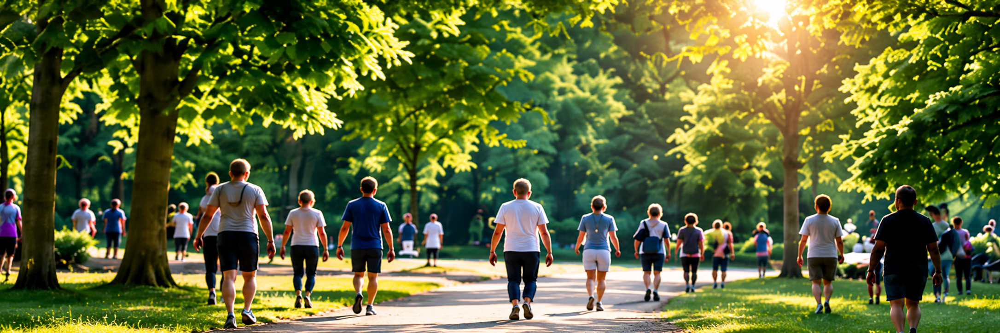

Deelnemers
320Dashboard
Overzicht voor beheerders
HUIDIGE AVOND4DAAGSE
Avond4daagse Den Haag 2027
Datum
12 t/m 15 mei 2027
Locatie
Den Haag

Opbrengst
€ 12.450Vrijwilligers
32Openstaande shifts
8Openstaande taken
5Website aanpassen
Beheer de zichtbare informatie op de publieke website.
Evenementfoto
Upload een eigen foto voor de homepage.
Wijzigen
Huisstijl
Beheer kleuren, logo en stijlelementen.
Wijzigen
Sponsoren
Upload en beheer logo's van sponsoren.
Beheren
Geschiedenis
Eerdere edities van de Avond4daagse Den Haag.
| Jaar | Datum | Deelnemers |
|---|---|---|
| 2026 | 18 t/m 21 mei | 642 |
| 2025 | 20 t/m 23 mei | 587 |
| 2024 | 21 t/m 24 mei | 531 |
| 2023 | 17 t/m 20 mei | 498 |
| 2022 | 16 t/m 19 mei | 466 |
Gegevens van vorig jaar overnemen
Maak een nieuw evenement op basis van een vorige editie. Routes, sponsoren, huisstijl en instellingen worden overgenomen.